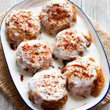
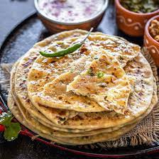

Our side of spices-
We are a newly created veg resturant at Jharsuguda in Orissa.We bring you the most delicious
veggie delights , the essence of which will water your mouth.our chefs prepare the dishes in
the most authentic way possible.Do try our dishes and give it a review...
YOUR REVIEWS MEANS A LOTT..
Some of our best selling and repeated dishes are:-

Dahiballas
 Paneer Butter Masala
Paneer Butter Masala

Paneer parathas